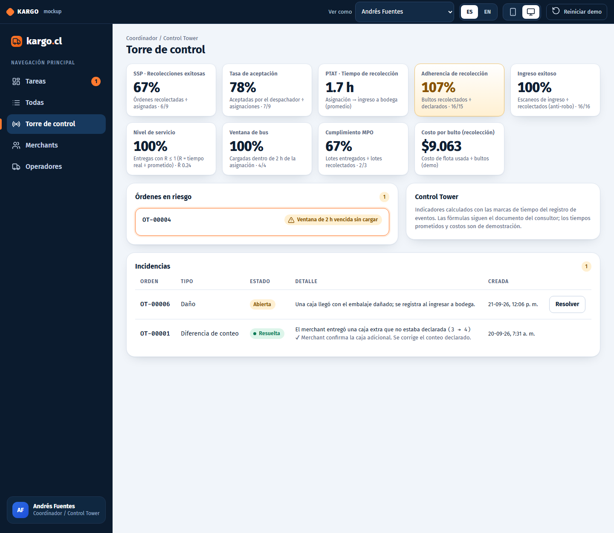
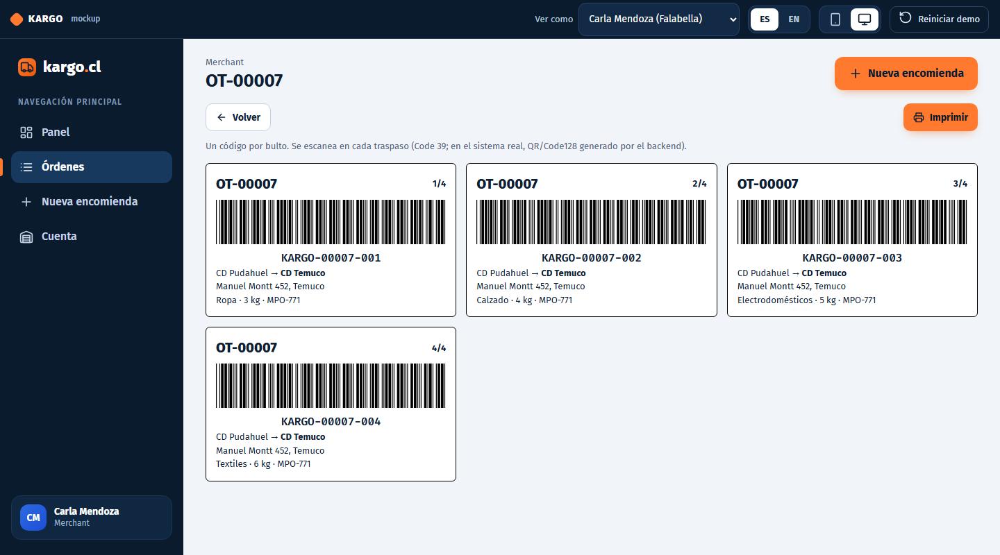

Qué cambió en el mockup después de leer el documento del consultor
Resumen de lo que planteó el consultor, las decisiones que tomamos, lo que se implementó en el mockup, en qué nos diferenciamos a propósito y qué queda pendiente.
01Resumen ejecutivo
02Qué dijo el consultor
03Decisiones tomadas
04Brechas: cómo quedó cada una
05El nuevo flujo (diagrama)
06Cambios por rol
07Cambios en datos y reglas
08Indicadores implementados
09Diferencias con el consultor
10Nomenclatura de escaneos
11Pendiente y próximos pasos
12Verificación
Fecha21 de septiembre de 2026
Versión del mockupv2 · commit 7a0e3eb (main)
AlcanceSolo mockup; el backend lo construye el equipo de desarrollo
01
Resumen ejecutivo
El consultor no nos entregó una especificación cerrada: nos entregó un esqueleto de requerimientos con preguntas abiertas, un mockup de la recolección y tablas de indicadores que aún están en borrador. Lo usamos como guía para completar el flujo que nos faltaba.
Lo que planteó
Logística en 3 tramos: First Mile (recolección), Mid Mile (bodega y bus) y Last Mile (entrega).
4 funciones de soporte: Control Tower, Auditoría/Conciliación, Finanzas e Infraestructura.
Para cada actor: qué espera de la app y cómo se mide su desempeño en un dashboard.
Antifuga: etiquetas "1/x", ingreso exitoso y conciliación de lotes.
Lo que hicimos
El flujo pasó de 8 a 11 estados, con aceptación del despachador y tramo de destino.
Última milla con dos modalidades: con el operador o retiro del destinatario.
El conductor de recolección puede ajustar la cantidad de bultos y reimprimir etiquetas; la firma es obligatoria.
Bus con sugerencia de la parrilla y ventana de 2 horas.
3 roles nuevos o ampliados: Control Tower, Auditoría y Finanzas, más el onboarding (Konnect y KAM).
9 indicadores calculados a partir del registro de eventos.
Estado de cada brecha frente al consultor
Área
Estado
Comentario
Flujo de recolección y destino
Hecho
Aceptación, ajuste de cantidad, ingreso a bodega destino, última milla y retiro.
Regla de 2 horas del bus
Hecho
Sugerencia de la parrilla, alerta de riesgo y cumplimiento medido.
Roles y onboarding
Hecho
Control Tower, Auditoría, Finanzas, alta de merchants por el KAM e importación de operadores desde Konnect.
Indicadores
Hecho
Calculados en el navegador; las fórmulas del consultor tienen dos errores que documentamos.
Etiquetas QR/DataMatrix e impresora real
Parcial
Simulamos la impresora y usamos Code 39; el QR real es trabajo del backend.
GPS en tiempo real
Pendiente
La integración está pendiente en el negocio; el mapa es un esquema.
Terceros para la última milla
Fuera
Decisión: se deja fuera por ahora.
Facturación y precios
En pausa
Finanzas es solo lectura y no muestra precios.
02
Qué dijo el consultor
El PDF tiene 12 páginas. Las páginas 1, 7, 9 y 11 son solo títulos de sección; la 10 (nomenclatura de escaneos) y la 12 (diagrama de flujo) están vacías: son entregables que el consultor espera de nuestro lado.
Actores y lo que espera de cada uno
Actor
Qué espera de la app
Cómo se mide
Merchant
Onboarding propio (para escalar), crear orden, seguimiento e historial.
—
Coordinador logístico
Visibilidad diaria: órdenes por código postal, vivas, pendientes y seguimiento en vivo de las recolecciones.
SSP (recolecciones exitosas)
Despachador
Onboarding, varias flotas (contrato, costo, conductor), marcarse activo/inactivo y aceptar las órdenes asignadas.
SSP, PTAT, tasa de aceptación, adherencia
Conductor de recolección
Impresora portátil conectada al teléfono; cada etiqueta con "1/x, 2/x…"; firma del merchant.
Ingreso exitoso (anti-robo en tránsito)
Bodega (Mid Mile)
Ingreso, staging y salida. Hoy solo se escanean ingresos.
(sin definir)
Tripulación del bus
Escaneo de carga. Sin escaneo al descargar.
—
Conciliación
Coincidencia de lotes de la orden maestra (MPO) y ubicación de envíos perdidos.
Cumplimiento MPO
Indicadores que definió (borrador)
Indicador
Fórmula del consultor
SSP
Órdenes recolectadas ÷ órdenes recibidas o asignadas (por día)
PTAT
Tiempo entre la asignación y la entrega en bodega
Aceptación
Órdenes aceptadas ÷ órdenes asignadas por el coordinador
Pickup Adherence
Cajas recolectadas ÷ cajas que debían recolectarse
Successful Inbound
Escaneos de ingreso ÷ cajas recolectadas
Nivel de servicio
R = tiempo real ÷ prometido; órdenes con R ≤ 1 ÷ total
CPS
Envíos ÷ costo de vehículos del día (recolección y entrega)
MPO compliance
Lotes entregados ÷ lotes recolectados
Tres cosas a corregir en su documento: (1) CPS está invertido: "envíos ÷ costo" es envíos por peso gastado, no costo por envío; (2) el nivel de servicio usa R < 1 y R ≤ 1 en distintas partes; (3) "MPO" nunca se define (asumimos orden de compra maestra que agrupa lotes).
Excluido por ahora, según el propio consultor: planificación de rutas, escaneos de staging y de salida de bodega, escaneo al descargar el bus, y el seguimiento de la bodega (queda como "scope of improvement").
03
Decisiones tomadas
Respuestas a las 5 preguntas del consultor
Pregunta
Respuesta
Qué implica para el sistema
1. Geografía
Ciudades o provincias; también código postal.
Ciudad como clave principal; código postal opcional en bodegas.
2. GPS
Sí, falta terminar la integración.
Queda pendiente; el mapa es un esquema.
3. Bodega → bus
Debe estar en ruta dentro de 2 horas de asignado.
Ventana de 2 horas con alerta (ver decisión sobre el bus).
4. Del bus al cliente
El mismo operador hace primera, media y última milla, bodega a bodega; también retiro en un punto del operador; terceros como idea personal.
Dos modalidades de última milla; terceros fuera.
5. Cliente rechaza la entrega
Se presume infrecuente.
Sin flujo propio por ahora (queda pendiente).
Corrección pendiente con el consultor: en la respuesta 5 se escribió "each individual winery". Quisimos decir warehouse (bodega). En español "bodega" significa ambas cosas y el consultor podría creer que los clientes son viñas.
Decisiones posteriores
Tema
Decisión
Última milla
Se implementan las opciones 1 (con el operador) y 2 (retiro del destinatario). Terceros quedan fuera.
Cantidad de bultos
El conductor de recolección sí puede cambiar la cantidad e imprimir etiquetas nuevas. La firma del merchant o de quien entrega es obligatoria en la recolección. (Esto revirtió la propuesta anterior de que solo levantara una incidencia.)
Bus
Asignación manual por el bodeguero, más una sugerencia del próximo servicio según la parrilla del operador. Si sale a más de 2 horas de la asignación se marca riesgo.
Parrilla de servicios
Es la lista de servicios del operador asignado.
Roles
Control Tower dentro del Coordinador; rol de Auditoría/Conciliación; rol de Finanzas maestro de solo lectura.
Onboarding de operadores
Lo hace Kargo: prefetch desde Konnect (buses, servicios y equipo vienen de su base de datos).
Onboarding de merchants
Lo hace el KAM, dentro de la vista del Coordinador.
Interpretación que hicimos: en el mensaje sobre el ajuste de cantidad se leyó "en destino"; lo aplicamos en la recolección (origen), que es donde el conductor recibe los bultos y donde exigimos la firma. Confírmalo si querías otra cosa.
04
Brechas: cómo quedó cada una
La lista de "qué falta de nuestro lado" que habíamos armado tras leer el PDF, con el resultado y dónde verlo en el mockup.
Brecha
Estado
Cómo quedó / dónde verlo
Aceptación del despachador
Hecho
Patricia (Despachador) ve Aceptar orden y Rechazar (con motivo); un rechazo devuelve la orden al coordinador. Orden ot_00008.
Recolección con conteo
Hecho
Héctor puede agregar bultos o marcar uno "no recolectado" con motivo; se imprimen etiquetas nuevas y queda una diferencia de conteo con incidencia. Orden ot_00007.
Firma del merchant en la recolección
Hecho
Sigue obligatoria: persona autorizada, RUT verificado y firma.
Tramo desde el bus al destino
Hecho
Estados nuevos: ingreso a bodega destino, última milla asignada o lista para retiro.
Regla de 2 horas
Hecho
El bodeguero ve los servicios de la ruta con etiquetas "Sugerido", "Dentro de ventana" o "Riesgo > 2 h". Orden ot_00006.
Parrilla de servicios
Hecho
Cada operador trae su parrilla (origen, destino, salidas). Se ve en Coordinador → Operadores.
Cómo se conecta un envío con un bus
Parcial
Manual con sugerencia, como se decidió. La sugerencia usa la hora del navegador.
Código postal / provincia
Parcial
Código postal opcional en bodegas. Falta agrupar por código postal en los paneles.
MPO / lote
Parcial
Campo opcional en la orden y KPI de cumplimiento. Falta definir MPO con el consultor.
Tiempo prometido
Parcial
Un único valor de 48 h en configuración. Falta por ruta y servicio.
Costos de flota
Parcial
Costo diario por vehículo (dato demo) para el costo por bulto.
Despachador: flota y activo/inactivo
Parcial
La flota y su costo llegan desde Konnect; falta el interruptor activo/inactivo.
GPS de vehículos
Pendiente
Integración pendiente en el negocio.
Etiquetas QR/DataMatrix, impresora real
Parcial
Code 39 y una impresora portátil simulada.
Control Tower
Hecho
Coordinador → Torre de control: 9 indicadores, órdenes en riesgo e incidencias.
Auditoría / Conciliación
Hecho
Rol nuevo: conciliación por punto de control y casos de incidencia.
Finanzas
Hecho
Rol nuevo, solo lectura: envíos por cliente y período, exportación CSV, sin precios.
Infraestructura
Parcial
Dentro del Coordinador: importar operadores y ver su parrilla y flota. Falta editar la red.
Onboarding merchant y operador
Hecho
Coordinador → Merchants (alta y bodegas) y Operadores (importar desde Konnect).
Diagrama de flujo y nomenclatura de escaneos
Hecho
Secciones 05 y 10 de este documento.
05
El nuevo flujo
Este es el diagrama que el consultor dejó vacío. Antes eran 8 estados y la orden saltaba de "cargada en bus" a "entregada"; ahora son 11.
ESC = escaneo de cada bulto (usuario + fecha/hora) · FIRMA = firma de una persona autorizada, RUT verificado visualmente · 10a = última milla con el operador · 10b = retiro del destinatario · la descarga del bus no se escanea · el merchant ve solo 5 estados (Creada, Asignada, En recolección, En tránsito, Entregada).
Igual, más campo MPO, aviso de retiro, diferencia de conteo visible, incidencias y detalle operativo.
Coordinador / Control Tower
Asignar a un operador.
Asigna eligiendo la última milla; ve KPIs y órdenes en riesgo; registra merchants y sus bodegas (KAM); importa operadores desde Konnect; resuelve incidencias.
Auditoría / Conciliación
No existía.
Nuevo, solo lectura: conciliación por punto de control, casos de incidencia (puede cerrarlos con una nota).
Finanzas
No existía.
Nuevo, solo lectura: envíos por cliente, operador y período; CSV; sin precios.
Despachador
Designar conductor y móvil.
Acepta o rechaza la asignación; designa recolección; designa la última milla cuando corresponde.
Conductor de recolección
Escanear y firmar.
Además ajusta la cantidad de bultos (con motivo), marca "no recolectado", reimprime etiquetas y reporta incidencias.
Encargado de bodega
Escanear ingreso y asignar bus.
Bus con sugerencia y ventana de 2 h; ingreso a bodega destino; en retiro: marca lista y entrega con escaneo y firma.
Conductor de bus
Escanear la carga.
Igual (la descarga sigue sin escaneo).
Conductor de entrega
Escanear y firmar en destino.
Ahora es el conductor de última milla, designado por el despachador.
Nombres: el "operador logístico" que mencionabas es en el sistema el Coordinador / Control Tower (tu equipo). El "Operador de transporte" es la empresa externa.
07
Cambios en datos y reglas
Archivos de datos nuevos
Archivo
Para qué sirve
konnect.json
Catálogo simulado de operadores de Konnect (flota, parrilla, equipo). De aquí se importa.
incidents.json
Incidencias: conteo, daño, faltante, otro; abiertas o resueltas, con foto opcional y nota de resolución.
config.json
Reglas de negocio: horas prometidas (48) y ventana del bus (2).
Campos nuevos en la orden
Conteo:bultos_declarados (no cambia), bultos_total (actual) y conteo con diferencia, motivo, quién y cuándo.
Aceptación: estado (pendiente, aceptada, rechazada) y lista de rechazos con motivo.
Transporte: servicio, salida, hora de asignación, hora de carga, riesgo_sla y ventana_ok.
Última milla: modalidad, conductor, móvil, punto de retiro y hora de "lista".
Bodega destino: hora de ingreso. MPO opcional. Bodegas con código postal opcional.
Reglas nuevas que el backend debe hacer cumplir
Regla
Detalle
Aceptar antes de designar
No se puede designar conductor sin que el despachador acepte. Un rechazo exige motivo y devuelve la orden a "creada".
Ajuste de cantidad
Solo durante la recolección, solo el conductor asignado y siempre con motivo. No se puede quitar un bulto ya escaneado. Cada cambio deja diferencia de conteo y abre una incidencia.
Firma obligatoria
La recolección y la entrega final no se confirman sin persona autorizada, RUT verificado y firma. Se confirma con los bultos activos escaneados.
Bus
El servicio debe cubrir la ruta y la salida debe existir en la parrilla. Si sale a más de 2 h de la asignación se marca riesgo. Al cargar se mide si se cumplió la ventana.
Modalidad de última milla
La elige el coordinador al asignar. Con el operador: el despachador designa conductor. Retiro: el bodeguero marca "lista" y entrega con escaneo y firma.
Incidencias
Las reportan el merchant y las cuadrillas; solo el Coordinador y Auditoría las resuelven, con nota.
Onboarding
Solo el Coordinador registra merchants (RUT válido y único) e importa operadores (una sola vez).
Roles de solo lectura
Auditoría y Finanzas ven todas las órdenes pero no pueden modificar operaciones.
08
Indicadores implementados
Se ven en Coordinador → Torre de control (y una parte en Auditoría). Todos se calculan con las marcas de tiempo del registro de eventos.
Indicador
Cómo se calcula en el mockup
Observación
SSP
Órdenes con recolección completada ÷ órdenes que alguna vez tuvieron operador.
Por período completo, no por día.
Aceptación
Órdenes aceptadas ÷ asignaciones (órdenes con operador + rechazos registrados).
Un rechazo cuenta como asignación.
PTAT
Promedio de (ingreso a bodega del operador − asignación al operador), en horas.
Solo órdenes que ya ingresaron.
Adherencia de recolección
Σ bultos recolectados ÷ Σ bultos declarados.
Sobre 100 % = bultos de más; bajo 100 % = faltantes.
Ingreso exitoso
Escaneos de ingreso a bodega origen ÷ bultos recolectados.
Anti-robo en tránsito.
Nivel de servicio
Entregas con R ≤ 1 ÷ entregas; R = (entrega − creación) ÷ 48 h.
Usamos R ≤ 1. Se muestra R promedio.
Ventana de bus
Órdenes cargadas dentro de 2 h de la asignación ÷ cargadas.
Indicador propio de la decisión de 2 h.
Cumplimiento MPO
Lotes con todas sus órdenes entregadas ÷ lotes con alguna orden recolectada.
Depende de definir MPO.
Costo por bulto
Costo diario de los vehículos usados en recolecciones ÷ bultos recolectados.
Orientada como costo ÷ envíos (corrige el error del consultor). Costos de demostración.

Torre de control: indicadores, órdenes en riesgo (ventana de 2 h vencida) e incidencias.
09
Diferencias con el consultor (a comunicarle)
Tema
El consultor
Nosotros
Quién imprime las etiquetas
El conductor las imprime en la recolección con impresora portátil.
El merchant imprime y pega las etiquetas antes. El conductor solo imprime etiquetas nuevas si cambia la cantidad, y puede reimprimir.
Cambio de cantidad
El conductor edita la cantidad.
Igual, pero siempre con motivo; queda diferencia de conteo e incidencia.
Verificación de identidad
Firma del merchant.
Además: al menos 2 personas autorizadas con RUT, comparado visualmente con la cédula, y firma en la entrega final.
Última milla
Abierta (operador, retiro o terceros).
Operador o retiro; terceros fuera.
Escaneo al descargar el bus
No hay.
No hay; el control está en el ingreso a la bodega de destino.
Fórmulas
CPS invertido; R < 1 y R ≤ 1.
CPS = costo ÷ bultos; R ≤ 1.
Recolección: escaneo por bulto, "No recolectado", tarjeta de cantidad de bultos y estado de la impresora.
10
Nomenclatura de escaneos (propuesta)
Es la tabla que el consultor dejó vacía. Todo escaneo registra pieza, usuario, fecha y hora.
Escaneo
Código interno
Quién
Dónde
Firma
Recolección
recoleccion
Conductor de recolección
Bodega del merchant
Sí
Ingreso a bodega origen
ingreso_bodega_op
Encargado de bodega
Bodega del operador (origen)
No
Carga a bus
carga_bus
Conductor o auxiliar de bus
Terminal / bodega origen
No
Ingreso a bodega destino
ingreso_bodega_destino
Encargado de bodega
Bodega del operador (destino)
No
Entrega
entrega
Conductor de última milla (o encargado, si es retiro)
Bodega destino o punto de retiro
Sí
No se escanea (fuera de alcance): descarga del bus, staging y salida de bodega.
Código de la etiqueta
Formato: KARGO-<OT de 5 dígitos>-<bulto de 3 dígitos>, por ejemplo KARGO-00007-002.
La etiqueta muestra además el conteo humano "i/n" (por ejemplo 2/4) para detectar cajas faltantes.
Los bultos agregados en la recolección continúan la numeración (por ejemplo la 005) y se marcan como "Agregado".
Hoy el código de barras es Code 39; el objetivo del consultor es QR o DataMatrix.

Etiquetas de la orden ot_00007: un código por bulto con "i/n".
11
Pendiente y próximos pasos
Tema
Quién decide
Nota
Facturación y precios
Negocio
En pausa; Finanzas ya entrega los datos para facturar.
Terceros en la última milla
Negocio
Quién paga y cómo se integra.
GPS real de los vehículos
Integración con Konnect
Hoy solo hay un mapa esquemático.
Definición de MPO y reglas de conciliación de lotes
Consultor
Asumimos "orden de compra maestra".
Tiempo prometido por ruta y servicio
Consultor + negocio
Hoy un único valor de 48 h.
Entrega fallida o reprogramada
Negocio
Se presume rara, pero conviene un estado mínimo.
Escaneo al descargar el bus
Consultor
Revisar cuando crezca el volumen.
Interruptor activo/inactivo del despachador y edición de la red
Producto
Falta en la sección Infraestructura.
QR/DataMatrix e impresora portátil real
Backend y hardware
Simulado en el mockup.
Próximos pasos sugeridos
Enviar al consultor las correcciones de su documento y la aclaración de "winery".
Validar con él el diagrama de flujo (sección 05) y la nomenclatura de escaneos (sección 10).
Decidir el tratamiento de la entrega fallida y del tiempo prometido por ruta.
Entregar al equipo de backend el repositorio: web/store.js es la especificación ejecutable y web/data/*.json el contrato de datos.
12
Verificación
17 pruebas automáticas pasan: cadena completa con ambas modalidades, permisos, ajuste de cantidad, ventana de bus, incidencias, onboarding, KPIs, conciliación, finanzas y cobertura de traducciones (todas las claves, errores y eventos existen en español e inglés).
Se recorrió el flujo completo desde la interfaz (merchant → coordinador → despachador con rechazo y reasignación → recolección con ajuste → bus con riesgo → destino → retiro con firma) sin errores de consola.
Código publicado en github.com/ref0612/kargo_final, rama main, commit 7a0e3eb.
Guía detallada de cada pantalla y botón: documento "Guía completa del mockup".